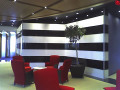

Eureka Metal & Glass Services, Inc. is one of Philadelphia's premier commercial glazing sub-contractors. Having been in business for over sixty years, we continue to build upon our reputation of success.
Invitations to Bid
Architects, Property Managers, and General Contractors can direct bid inquiries to bids@eurekaglass.com.
General Information
To find out more about our commercial glazing solutions or obtain other information, please e-mail us at info@eurekaglass.com or Click to Call our office to talk with a specialist today!

At Eureka, we are committed to building relationships of trust and integrity with our clients that allow us to utilize our expertise and professionalism throughout every stage of our clients' projects.From concept to completion, we are focused on one goal:
Provide high quality, on-time glass and glazing installations in a cost-effective way with particular attention to the client's schedule.
Our entire team is committed to helping you succeed. After all, your success leads to our success!